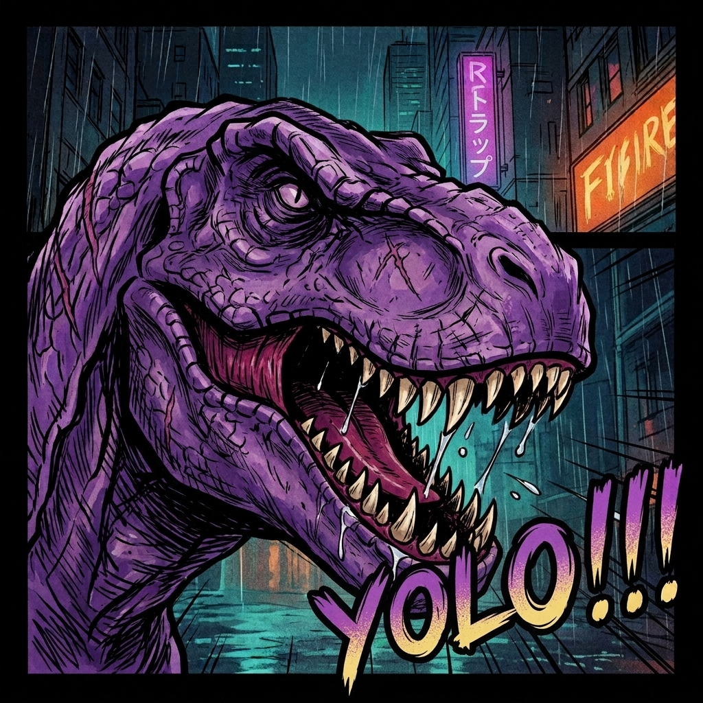

Tame a self-hosted code dinosaur that never sleeps: label an issue, drop a /barney comment, push to main — it wakes up, does the work, and drags back a pull request. One YAML file. No runners. It only bites flaky tests.
One .barney/manifest.yaml in your repo. Cave paintings, but versioned —
review agent behavior in PRs, roll it back with git revert, and let every
project tame its own beast.
Delegate implementation. Anyone with triage rights pokes the dino with a label, Barney does the rest.
version: "v0" triggers: - id: fix-labeled-issues event: issues.opened filter: payload.issue.labels.exists(l, l.name == 'agent-task') agent: opencode prompt_template: "Issue: {{ .payload.issue.title }} {{ .payload.issue.body }} Implement the change, keep tests green."
Slash commands. Comment /barney <task> on any issue to point the dinosaur at fresh prey, on demand.
# /barney fix the flaky login test triggers: - id: slash-command event: issue_comment.created filter: payload.comment.body.startsWith('/barney') agent: opencode prompt_template: "The user wrote: {{ .payload.comment.body }} Do what they asked on issue #{{ .payload.issue.number }}."
Review on autopilot. The dino checks out the PR's own code — not the base branch — and gnaws on the diff.
triggers: - id: pr-review event: pull_request.opened filter: !payload.pull_request.draft agent: opencode prompt_template: "Review PR #{{ .payload.pull_request.number }}: {{ .payload.pull_request.title }}. Run the tests, fix what breaks, and improve anything obviously wrong."
Self-healing main. A push lands, the dino sniffs it, and opens a fix PR if it smells blood.
triggers: - id: post-merge event: push filter: payload.ref == 'refs/heads/main' agent: opencode prompt_template: "A push landed on main. Run the test suite and open a fix PR if anything fails."
issues, issue_comment, pull_request, pull_request_review_comment, push
A purple Tyrannosaurus that evolved specifically to read GitHub webhooks.
459 million years of evolution led to this: it clones your repo, branches off, runs
your agent of choice inside the fresh kill, and commits the remains as a
pull request. Fully domesticated. House-trained. Revertible with
git revert.
Real git, real branches, real PRs. No magic you can't inspect — just very old, very reliable teeth.
Every event gets its own branch. Changes come back as normal PRs — reviewable, revertible, blameable. Fresh meat, every time.
Five GitHub event types with CEL filters. It strikes on labels, comments, drafts, or a push to main. Never misses feeding time.
Self-hosted and always-on. It feeds on one API key and the occasional issue label — not your CI budget.
Config is a single in-repo file: versioned, reviewed, owned by the project — not carved into some settings page.
opencode works out of the box. The harness interface is one ID + one Execute call — teach the old lizard new tricks.
Tokens and agent credentials never leave your infrastructure. HMAC-verified webhooks only. Strangers get bitten (401).
Every step is a real, logged subprocess — you can watch the whole hunt from the container logs.
One container, one env file, one webhook, one stone tablet. That's the whole domestication program.
# 1 · wake the dinosaur (published on every release) mkdir barney && cd barney curl -O https://raw.githubusercontent.com/marcusfelix/barney/main/.env.example cp .env.example .env # add WEBHOOK_SECRET, GITHUB_TOKEN, agent key docker run -d --name barney --env-file .env \ -p 8080:8080 \ -v barney-workspaces:/var/lib/barney/workspaces \ ghcr.io/marcusfelix/barney:latest # 2 · feed it webhooks (or add one in repo settings) gh webhook forward --repo=you/your-repo \ --events=issues,issue_comment,pull_request,push \ --url=http://localhost:8080/webhook # 3 · carve the stone tablet and poke the beast git add .barney/manifest.yaml && git commit -m "barney: awaken" && git push # → ⎇ barney/issues-… ✓ → PR dragged home ✓
barney-bot, trex-devops,
caveman-coder). Commits and PRs clearly come from the dinosaur, its token
stays scoped to what it needs, and revoking it never touches your own account.